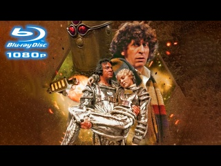
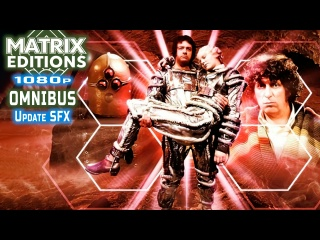
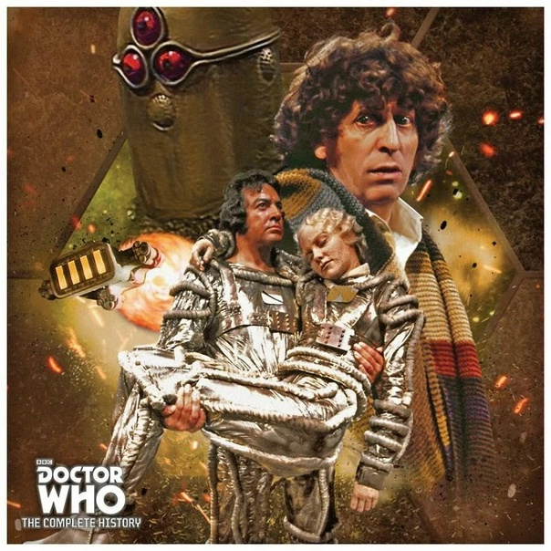

Субтитры: Русские и Английские |  |
|---|---|
с обновлением визуальных эффектов (cunningmunki) Субтитры: отсутствуют |  |
Underworld
Дата выхода: 7-28 января 1978
Формат: 4 эпизода по 25 мин.
| |
На краю расширяющейся вселенной ТАРДИС встречает корабль миньянцев, тысячелетиями ищущий другой корабль с генетическим банком своего народа, чтобы основать новую цивилизацию. Но цель долгого пути оказывается не такой, как думалось — корабль-банк превратился в планетоид, где общество погрязло под властью безумного суперкомпьютера. Сюжет Боба Бейкера и Дэйва Мартина переосмысляет древнегреческий миф о Ясоне и Золотом Руне, а заодно раскрывает происхождение политики невмешательства Повелителей Времени. Серия примечательна рекордным для сериала количеством хромакея — бюджет был сокращён из-за инфляции, и съёмки на цветном фоне стали единственным способом уложиться в смету.
VHS - март 2002 | DVD - 29 марта 2010 |  Blu-ray - 18 марта 2024 * Версия в нашей группе |
|---|
